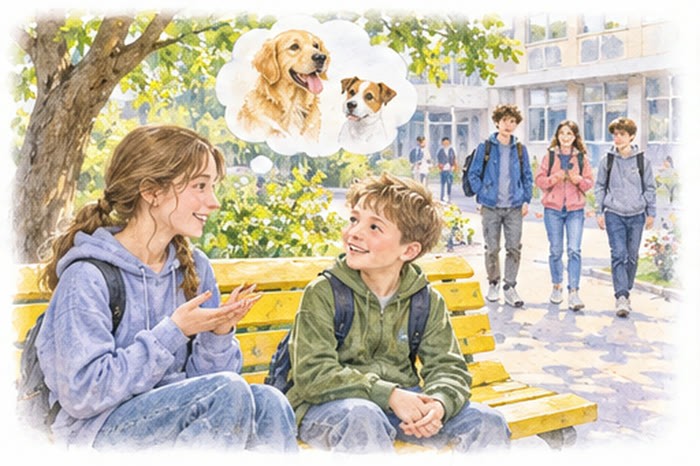

Listen to the text
Speed:

There is a yellow bench in our school yard. A year ago it was an ordinary old bench. Now it is the most important place in the school. The idea came from Vasylyna, a girl from the seventh form. She had read about "friendship benches" in schools in other countries. The rule is simple. If you feel lonely or have nobody to play with, you sit on the bench. Other students see you and come to talk or invite you to join them. Vasylyna wrote to the head teacher. The head teacher liked the idea, especially because it cost almost nothing. The students painted the bench themselves. Somebody wrote on the back: "Nobody sits alone." At first people were shy. Nobody wanted to be the first. So Vasylyna sat on the bench herself for a whole week. On the third day a small boy from the fifth form sat down next to her. They talked about dogs for twenty minutes. Now the bench is used every day. Last month a new girl from Zaporizhzhia sat there on her first day. By the end of the break she had been invited to three different groups. The teachers say that there are fewer arguments in the yard. Older students have started to look after younger ones. Two other schools in our town have painted their own benches. "It is easier said than done to walk up to a stranger and say, 'I am lonely'," says Vasylyna. "Sitting down is easier. The bench says it for you." She keeps in touch with the boy from the fifth form. They are still talking about dogs.
Tap any sentence to hear it again.
Сподобалось? На сайті ще більше матеріалів для вчителів!
Reader, презентації, ігри, діагностичні та контрольні роботи до підручників 1-11 класів.
Перейти на сайт materials.allaenglish.com